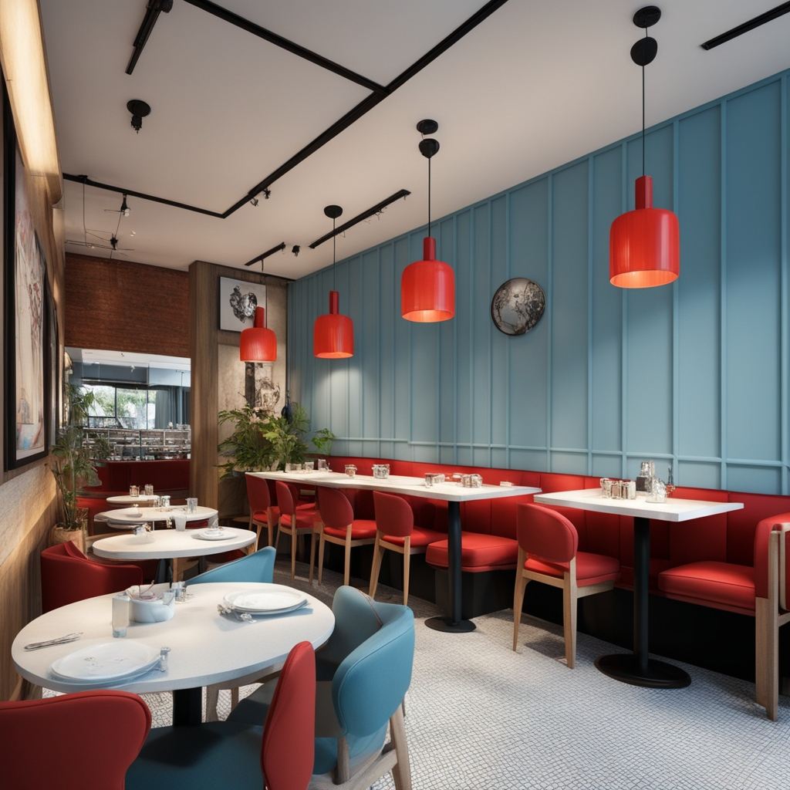
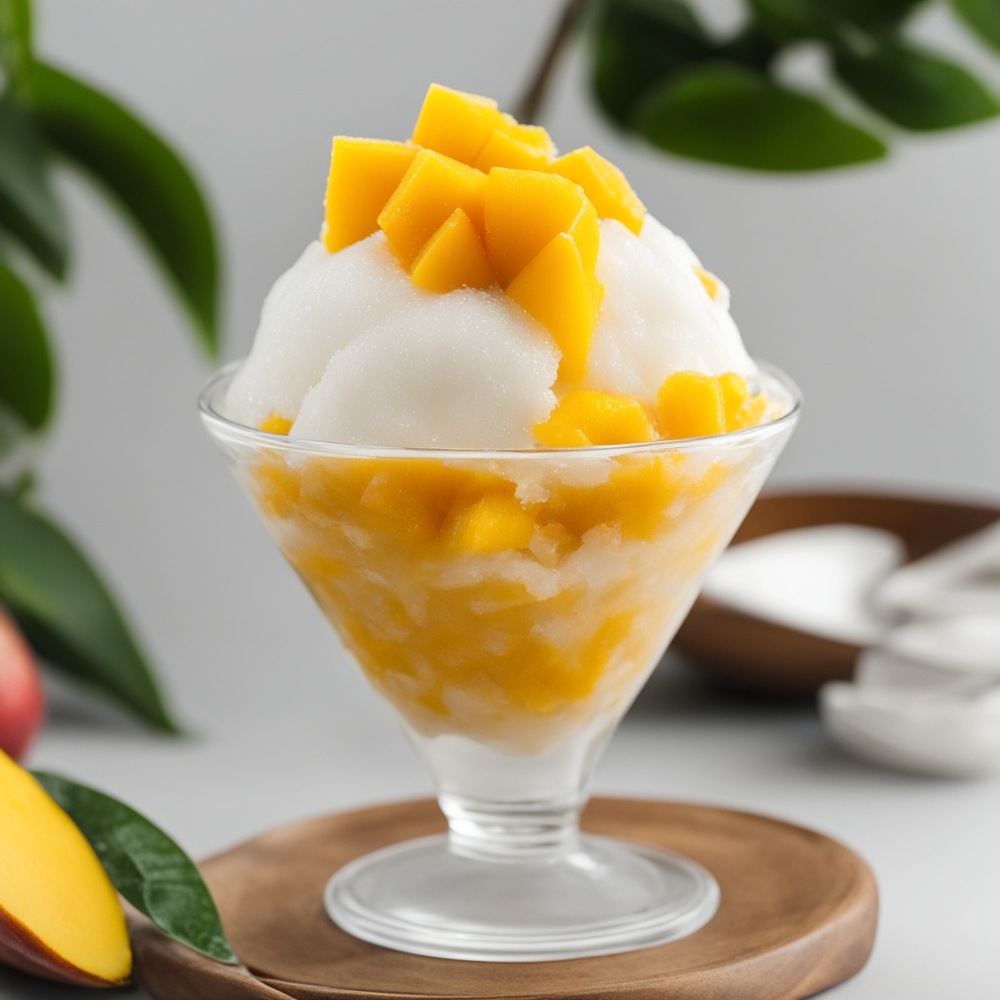
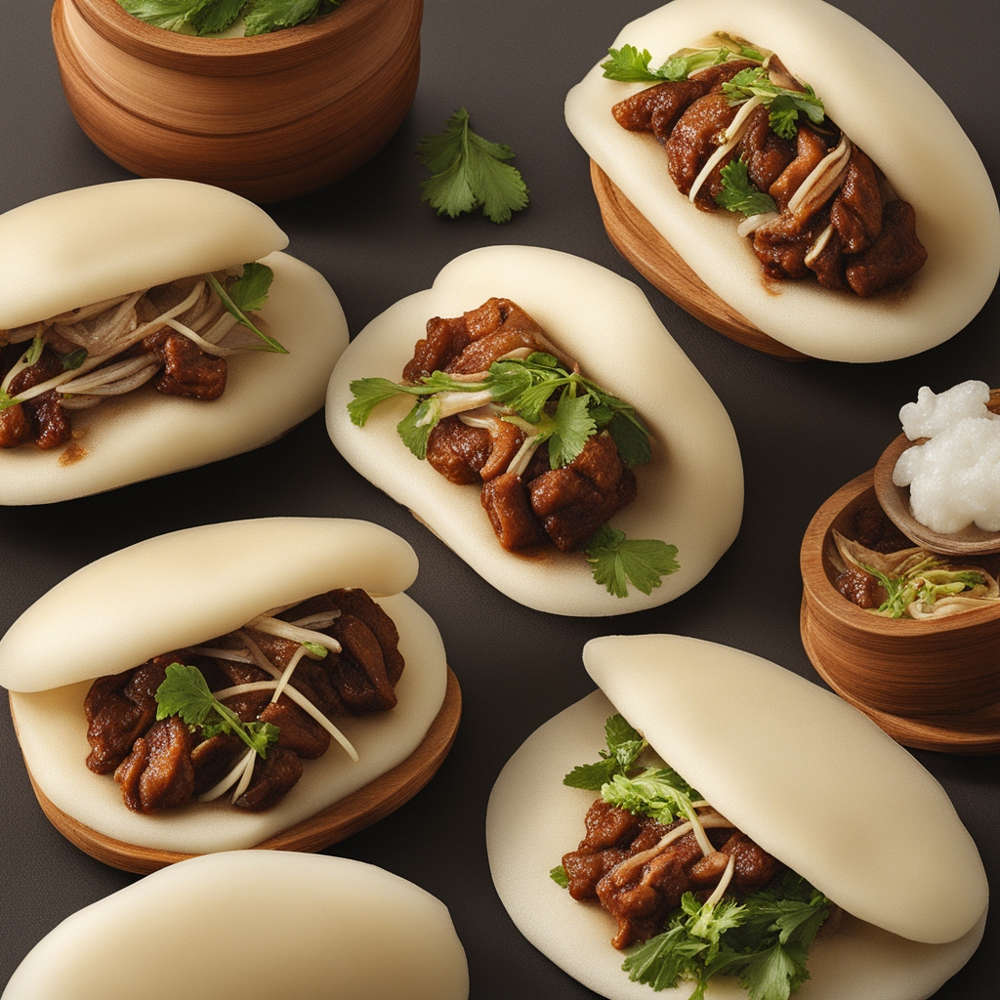

About Us
Formosa is a casual dining Taiwanese restaurant located in the heart of San Diego. Our mission is to bring authentic Taiwanese cuisine to those who miss their homeland and introduce innovative Taiwanese dishes to food enthusiasts seeking creative culinary experiences. Our beverage list features a curated selection of premium loose-leaf teas sourced from Taiwan, alongside a rotating selection of craft beers, wines, and Taiwan-inspired cocktails. Our interior design is a fusion of contemporary aesthetics and Taiwanese inspiration, creating a modern yet nostalgic ambiance reminiscent of dining at a local Taiwanese eatery. Explore more about Taiwan.